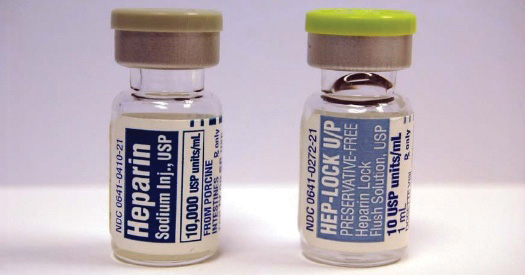

Intentional torts require some level of intent to be committed, such as the intent to batter someone. Negligence torts don’t require intent to harm but require some level of carelessness or neglect. Strict liabilityLiability without fault. torts require neither intent nor carelessness. In fact, if strict liability applies, it is irrelevant how carelessly, or how carefully, the defendant acted. It doesn’t matter if the defendant took every precaution to avoid harm—if someone is harmed in a situation where strict liability applies, then the defendant is liable.
Since this rule can have harsh consequences, it applies in a only few limited circumstances. One of those circumstances is when the defendant is engaged in an ultrahazardous activityAn activity so inherently dangerous that those who undertake the activity and cause injuries are strictly liable.. An ultrahazardous activity is one that is so inherently dangerous that the risk to human life is great if anything wrong happens, so the person carrying out the ultrahazardous activity is held strictly liable for those activities. Transporting dangerous chemicals or nuclear waste, for example, is inherently dangerous. If the chemicals spill, it is very difficult, if not impossible, to prevent injury to property or persons. Similarly, businesses that use dynamite, such as building demolition crews, run the risk that no matter how careful they are, people or property could be damaged by intentionally igniting dynamite. Therefore, strict liability applies.
Strict liability also applies when restaurants, bars, and taverns serve alcohol to minors or visibly intoxicated persons. This activity is dangerous, and there is a high risk of probability that these patrons, if they drive, will injure others. Many states have dram shop actsState laws establishing strict liability for taverns, bars, and restaurants for serving alcohol to minor or visibly intoxicated persons who then cause death or injury to others. that impose strict liability in this circumstance.
You might wonder why defendants are held strictly liable if they are acting reasonably or are even being ultracautious. As with most issues in law, the answer lies in social policy. In essence, strict liability torts exist because businesses that engage in covered activities (such as transporting hazardous chemicals or operating bars) profit from those activities. They are also in the best position to ensure that every precaution can be taken to avoid an unexpected event, which may have catastrophic consequences. Victims of these events are often innocent members of the public who are not in any position to avoid being injured and therefore should not be denied a legal remedy simply because the defendant took prudent precautions. This social policy concern is also expressed in the most important area of strict liability application, strict product liabilityUnder strict product liability, manufacturers, distributors, and retailers are strictly liable for injuries caused by unreasonably dangerous products..
In strict product liability, any retailer, wholesaler, or manufacturer that sells an unreasonably dangerous product is strictly liable. For example, Toyota recently disclosed that it had manufactured and sold several vehicle models with faulty accelerators, leading to several cases of unintended acceleration and subsequent deaths. Vehicles that accelerate unintentionally are clearly unreasonably dangerous. In this case, the manufacturer (Toyota Japan), the wholesaler or importer (Toyota’s U.S. sales company), and the retailer (local dealers) are all strictly liable for injuries caused by these faulty accelerators. Note, however, that strict liability applies only to commercial sellers. If a private citizen sold his or her Toyota on Craigslist, for example, he or she would not be strictly liable for selling an unreasonably dangerous product.
To demonstrate that a product is unreasonably dangerous, plaintiffs have two theories available to them. First, they might allege that the product was defective because of a flaw in the manufacturing process. Under this theory, the vast majority of products being produced turn out fine, but due to some sort of production defect, a few samples or a batch turns out defective. If these defective samples are sold to the public, the manufacturer or seller is strictly liable. A light bulb factory that manufactures a million safe light bulbs, for example, and then manufacturers one that explodes when it is turned on due to some production defect, is strictly liable for the injuries caused. Similarly, a frozen pizza factory that produces thousands of pizzas without any trouble would be strictly liable if one frozen pizza is produced that contains foreign contaminants because of a production defect such as an inattentive worker or machine breakdown.
Second, a product may be defective because of a design defect. Here, there is nothing wrong with the manufacturing or production of the product. Rather, the product is defective because it was designed incorrectly or in a manner that causes the product to be unreasonably dangerous. Engineers continually work to design products to be as safe as possible, but in some cases the product is nonetheless dangerous, and the manufacturer or seller is strictly liable. For example, starting in 1991 several Boeing 737 jetliners began experiencing unexpected movement in the rudder, leading to several high-profile crashes including a USAir flight in Pittsburgh that killed 132 people.“When Jets Crash: How Boeing Fights to Limit Liability,” Seattle Times, October 30, 1996, http://seattletimes.nwsource.com/news/local/737/part04 (accessed September 27, 2010). During the course of investigation, the government discovered that the part that controls the rudder gets very cold in flight, and when it is injected with hot hydraulic fluid, the part can jam and move the rudder in the opposite direction of what the pilot is calling for. This design defect was eventually fixed by upgrading the rudder control systems on all existing Boeing 737s worldwide.
http://www.time.com/time/business/article/0,8599,128198,00.html
In 1999 Ford customers in the Middle East began experiencing tread separation problems on Ford Explorer SUVs. The tires would disintegrate, leading to a loss of control and often a rollover crash. The company initially believed that the problem was limited to the Middle East because of unique characteristics there such as extremely hot weather, lowered tire inflation pressures for driving in sand, and harsh operating environments. Soon, however, vehicles in the United States, especially in hotter regions of the country, began experiencing the same problems. The death toll mounted to over 170 deaths and over 700 injuries from these accidents. Ford’s investigation led the company to believe that certain fifteen-inch tires manufactured by Firestone were to blame; virtually all the accidents involved Firestone tires manufactured in one plant in Decatur, Illinois (now closed). Similar vehicles equipped with Goodyear tires rarely experienced tread separation problems. Firestone, on the other hand, blamed the Ford Explorer for being defectively designed. Firestone argued that the Explorer lacked critical safety features to lower the center of gravity, reduce the propensity to roll over, and lessen the chance of underinflating the tires. Firestone pointed out that the same tires did not experience any problems when installed on GM vehicles. Whether the fault lay with a production defect in Firestone tires or design defect in Ford Explorers, both companies were strictly liable. Ford spent over $3 billion recalling the tires and ended its one-hundred-year relationship with Firestone. Congress also responded, passing a federal law requiring all vehicles to be equipped with tire pressure monitoring systems.
Many product liability cases arise from the defective design theory because courts have held that the warning labels on products, as well as accompanying literature, are all part of a product’s design. A product that might be dangerous if used in a particular way, therefore, must have a warning label or other caution on it, so that consumers are aware of the risk posed by that product. Manufacturers must warn against a wide variety of possible dangers from using their products, as long as the injury is foreseeable. If consumer misuse is foreseeable, manufacturers must warn against that misuse as well. For these reasons, window blinds come with warnings about choking hazards posed by the rope used to raise and lower them, and hair dryers come with warnings about operating them in bathtubs and showers.
While you may think that these warnings are a little silly, keep in mind that products can harm or kill people who don’t know how to use them correctly. For example, in one case, a woman traveling in the passenger seat of a GM SUV was killed in a low-speed collision in a parking lot when airbags deployed in a collision. The woman was killed because her seat was reclined and rather than being restrained by the seat and seatbelt, she “submarined” underneath the seat belt and hit the deploying airbag. When her family sued GM, the company argued that seats and seatbelts work only when the seat is in an upright position and that the owner’s manual warns not to recline the seat when the vehicle is in motion. The family argued successfully that this warning was not clear and conspicuous enough, and that as a result many people travel with their seat reclined. Do you believe the lack of a clear and conspicuous warning about the danger of traveling with the seat reclined makes a vehicle’s design defective?
http://www.usatoday.com/life/people/2007-12-04-quaid-lawsuit_N.htm
Figure 7.9
Should these labels be more distinctive to prevent mistakes?
In November 2007 actor Dennis Quaid and his wife Kimberly were celebrating the birth of their newborn twins at Cedars-Sinai Medical Center in Los Angeles. The twins suffered a staph infection, and doctors prescribed a blood thinner to prevent blood clots. The blood thinner, Heparin, comes in two doses, with the heavier dose one thousand times more potent than the lower dose. However, the two doses come in similar packaging with blue labels. Nurses at the hospital inadvertently gave the twins the higher dose, nearly killing the twins. In Indianapolis earlier that year, three premature infants did in fact die from overdosing on Heparin. The Quaids are suing the manufacturer, arguing that the labels on the drug represent a design defect because it is too easy to confuse the two doses. The manufacturer, Baxter Healthcare, has since changed the design to include a red warning label that must be torn off before the drug can be used.
There are several defenses to strict product liability. Since product liability is strict liability, the plaintiff’s contributory or comparative negligence is not a defense. However, assumption of risk can be a defense. As in negligence, the user must know of the risk of harm and voluntarily assume that risk. For example, someone cutting carrots with a sharp knife voluntarily assumes the risk that the knife may slip and cut him or her, meaning he or she cannot sue the knife manufacturer. However, if the knife blade unexpectedly detaches from the knife handle because of a design or production defect, and injures the user, then there is no assumption of risk since the user would not have known about that particular risk.
Product misuse is another defense to strict product liability. If the consumer misuses the product in a way that is unforeseeable by the manufacturer, then strict liability does not apply. Modifying a lawn mower to operate as a go-kart, for instance, is product misuse. Note that manufacturers are still liable for any misuse that is foreseeable, and they must take steps to warn against that misuse. A related defense is known as the commonly known danger doctrine. If a manufacturer can convince a jury that the plaintiff’s injury resulted from a commonly known danger, then the defendant may escape liability.
In areas where strict liability applies, the defendant is liable no matter how careful the defendant was in preventing harm. Carrying out ultrahazardous activities results in strict liability for defendants. Another area where strict liability applies is in the serving of alcohol to minors or visibly intoxicated persons. A large area of strict liability applies to the manufacture, distribution, and sale of unreasonably dangerous products. Products can be unreasonably dangerous because of a production defect, design defect, or both. A product’s warnings and documentation are a part of a product’s design, and therefore inadequate warnings can be a basis for strict product liability. Assumption of risk, product misuse, and commonly known dangers are all defenses to strict product liability.